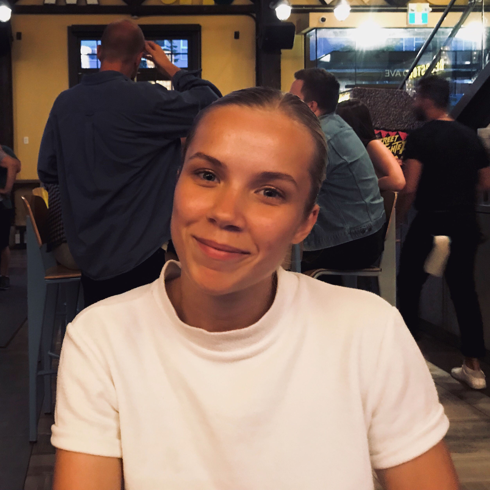

I am so happy you are here, let me introduce myself! My name is Ellinor Svalberg and I am a computer information systems student graduate from Sweden, now living and working in Vancouver, Canada. I am from a town called Linköping, Sweden where I lived until I was 18 years old. After my high school studies in Linköping, I moved to Uppsala, Sweden to study Computer Information Systems at Uppsala University. I spent three years in Uppsala, studying, working, engaging in different associations, and just having a good time. After those three amazing years of studies, I decided to follow one of my biggest dreams in life: Move to Vancouver. So here I am!

So who am I? Well, I am a creative and detail-oriented person who enjoys being in the process of creation and development. Being a part of creating something, or solving a problem is something truly amazing. I can spend hours perfecting my work, for better and for worse hehe. Another big passion of mine is engaging myself in different associations where I can contribute to a difference being made. Henceforth I enjoy working in groups with a lot of different people with various personalities and backgrounds. I believe that the best work is generated in a group that's striving for the same goal. I think the best work environment is where development and learning are in focus, which is why I always strive to learn new things and deepen my skills. With an open mind-set, a positive attitude, and a great team, all problems are solvable.
Besides this I am a person who values sustainability and is striving for a sustainable lifestyle. I am very happy that I get to work with sustainability everyday trough my job but I am eager to get more involved in the future. I spend a lot of my free time outdoors or being creative (mainly through my bullet journal, see it in my portfolio!). A day off is preferably spent in the ski slopes or at a cafe with a good book. That's a little bit about me :)
This is my webpage where I can be creative, and it is far from done! But for now, see my portfolio for some different projects I have done, or check my timeline to see what I have been up to.
I am currently working as a software developer at the Vancouver based company Clir Renewables. We are a renewable energy AI software company whose cloud-based tools help asset managers and owners maximize their production. I am working on the pipeline team, maintaining and improving our data pipeline that ingests data from wind turbines to our be used by our software. It is a great position since I get to combine two of my big passions: sustainability and software developent.